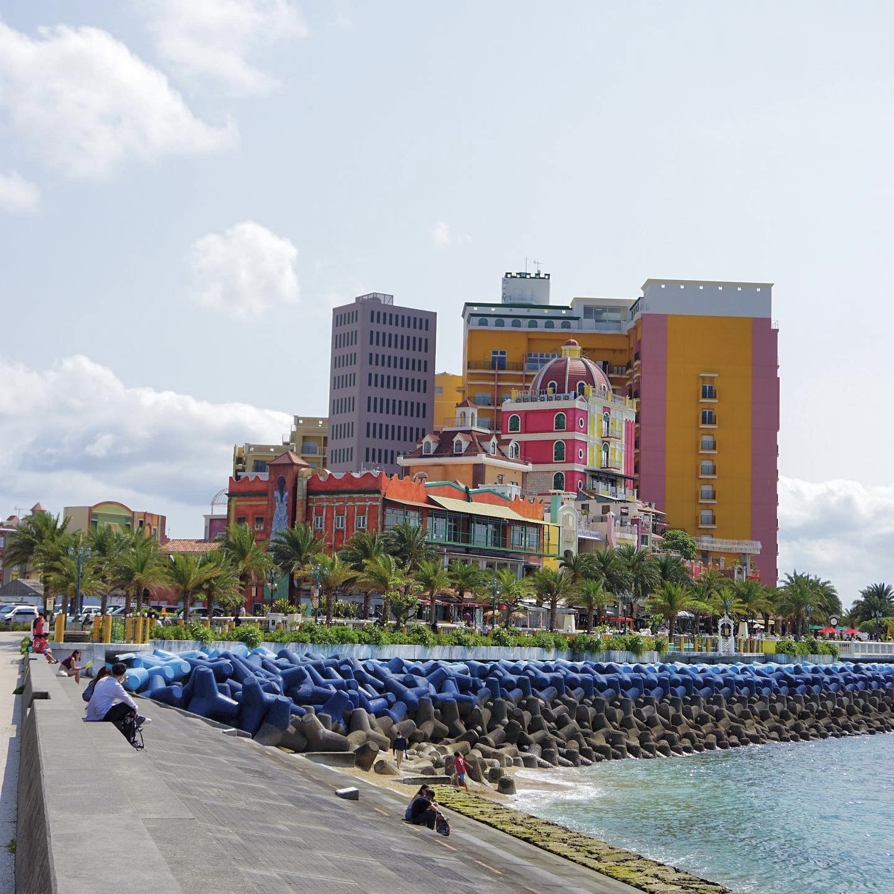
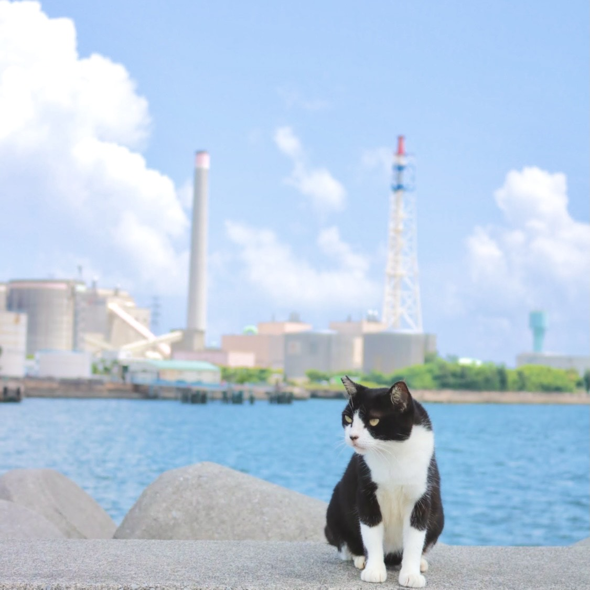
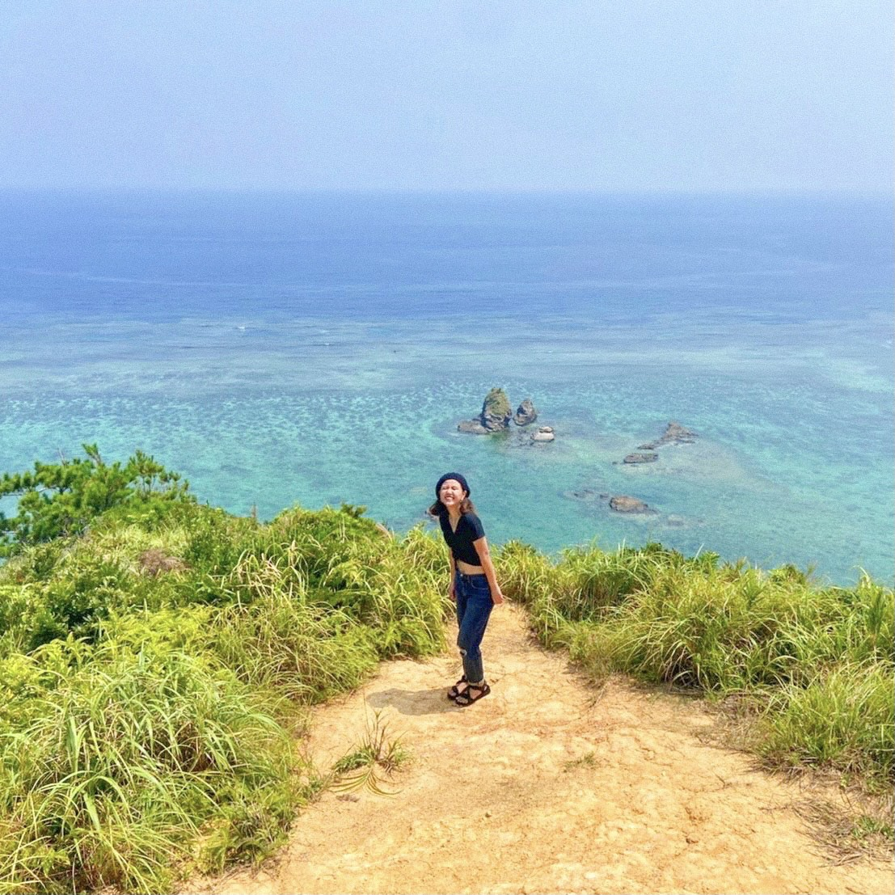
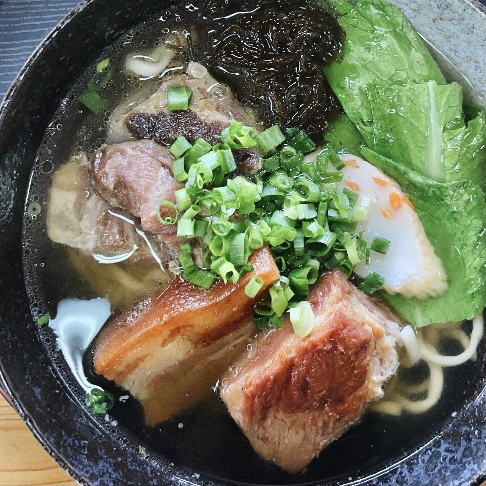
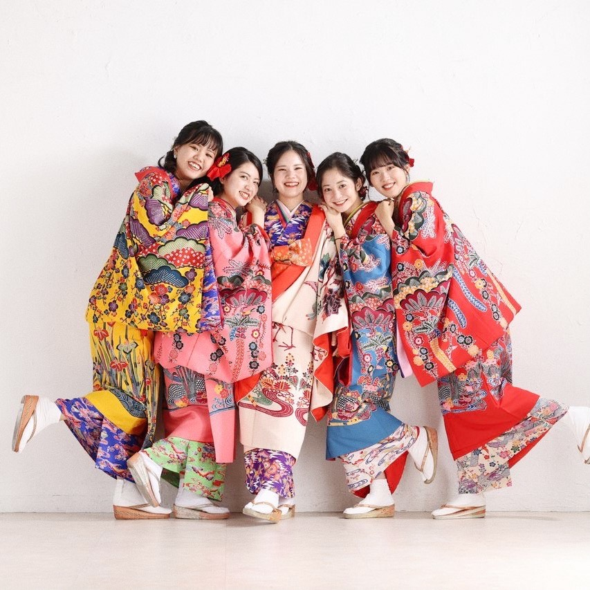
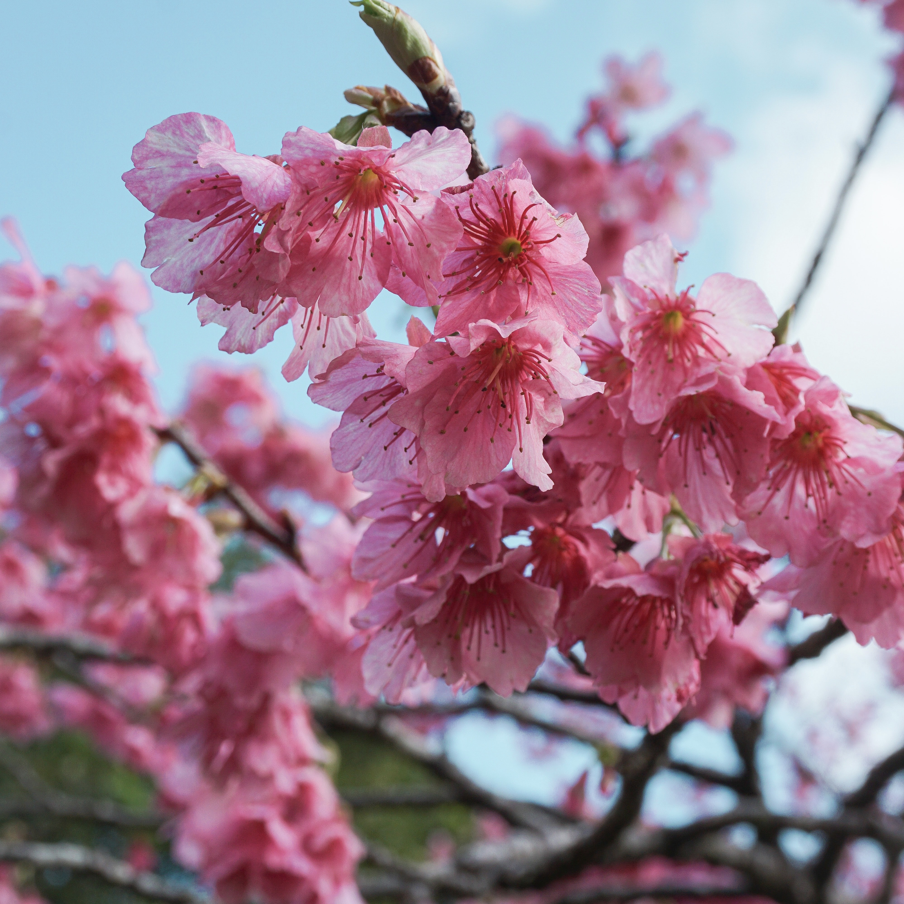

― Okinawa ―
わたしのだいすきなふるさと、沖縄。お気に入りの写真たちを集めてみました。一度行ったら、沖縄LOVERになりますよ☻ めんそーれ沖縄！
-

【北谷/サンセットビーチ】アメリカンビレッジのすぐ近くにあるサンセットビーチ。毎週土曜日は花火があがります。夕日もきれいなんです。まさに非日常空間。
-

【北谷/アメリカンビレッジ】人気の観光スポット。外国人も多く、海外にいる気分を味わえます！カラフルな建物はどこを撮ってもオシャレ。クリスマスは特におススメ！
-

【うるま市/石川】わたしの地元。家からビーチまで徒歩3分。よくここで散歩したり、スケボーしたり、、初日の出は地元の友だちとここで見るのがルーティン。
-

【名護/ジュゴンの見える丘】絶景穴場スポット！片道20分の山を登ったあとの美しい景色に感動すること間違いなし。
（かなりしんどいけど。汗） -
【うるま市/あやはし海中道路】中部の人気スポットといえばココ！離島への架け橋。手軽にマリンスポーツも楽しめます。夜のドライブには欠かせません！
-
【うるま市/あやはし海中道路】マリンスポーツのおススメは、パラセーリング！濡れないので、着替えなくてもできるのが◎！運良ければ空からウミガメが見えるかも☆
-

【名護/さっちゃんそば】わたし的沖縄一おいしい沖縄そばです。一啜りすれば幸せになれる一杯。地元民にも人気で売り切れちゃうことも！！おっとヨダレが...
-

【琉装】琉球王国時代の民族衣装。レンタルして写真を撮ることもできます！男性用もあります！わたしは卒業写真を兼ねて撮りました！
-

【本部/八重岳】沖縄の桜は、ヒガン桜といい濃いピンクが特徴的。1月中旬頃から咲きはじめます！八重岳は特におススメのスポット☆